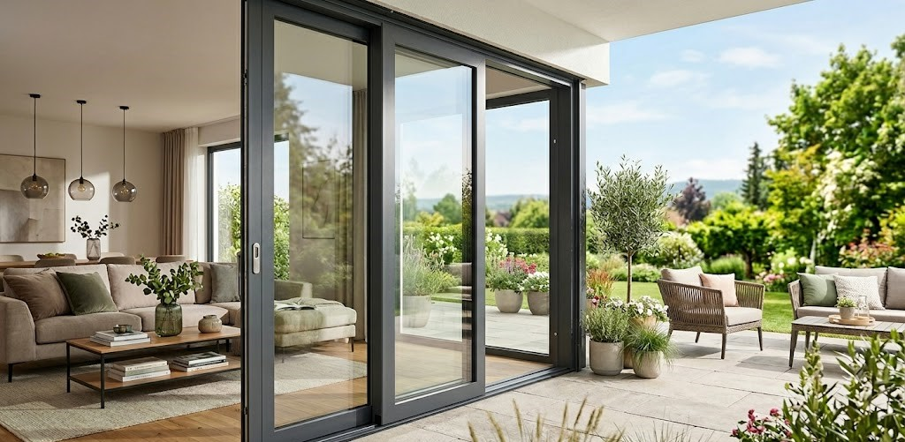

Hangi Sistemi Seçmelisiniz?
Mekanınızın yapısına ve kullanım amacınıza en uygun sistemi belirleyin.

Katlanır Cambalkon
Cam panellerin raylar üzerinde hareket ederek bir köşede akordeon gibi toplanmasını sağlayan klasik sistemdir.
- Tamamen Açılabilir: Balkonunuzu %100 açık hale getirebilirsiniz.
- Kolay Temizlik: Camlar içeri katlandığı için dış yüzeylerini evinizin içinden güvenle silebilirsiniz.
- Kullanım Alanı: Ev balkonları, kış bahçeleri ve teraslar için en ideal ve yaygın çözümdür.

Sürme (Sürgülü) Sistem
Cam panellerin kendi etrafında dönmeden, raylar üzerinde sağa veya sola kaydırılarak üst üste bindiği sistemdir.
- Alan Tasarrufu: Camlar içeri katlanmadığı için dar balkonlarda veya iç mekanda yer kaplamaz.
- Pratik Kullanım: Eşikli veya eşiksiz ray seçenekleriyle çok hızlı açılıp kapanır.
- Kullanım Alanı: Cafe, restoran, ofis bölmeleri ve dar alanlı ev balkonları için mükemmeldir.